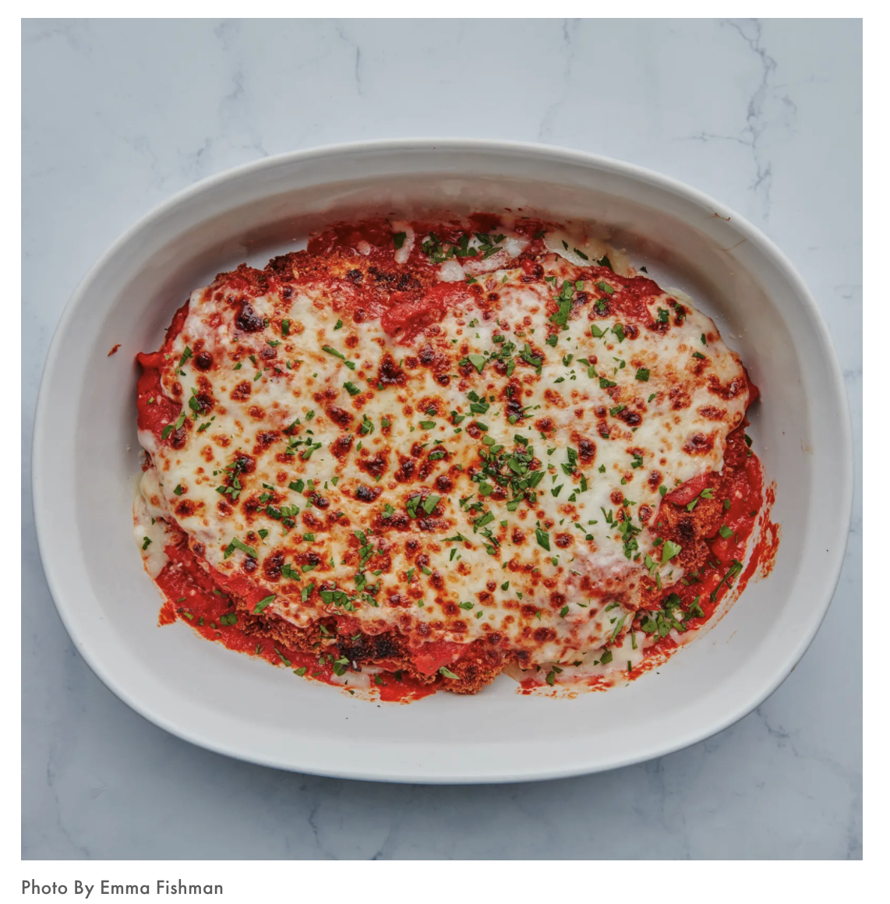

A classic done right. Pair with noodles, gnocchi, or make a sandwich!
Give this recipe a try for your next date night or italian craving.
Step 1
Heat oil in a large Dutch oven or other heavy pot over medium. Add onion and garlic and cook, stirring often, until softened but not browned, about 5 minutes. Add tomato paste and red pepper flakes and cook, stirring, until paste is slightly darkened in color (it should start to fry in the oil), about 1 minute. Add tomato purée, salt, and sugar, and bring to a simmer. Partially cover pot with a lid (to avoid splattering), reduce heat so sauce is at a very bare simmer, and cook, stirring occasionally, until slightly thickened, 40–50 minutes.
Do ahead: Sauce can be made 2 days ahead. Let cool. Transfer to an airtight container; cover and chill.
Step 2
Working one at a time, place a chicken breast on a cutting board so a short side is towards you and holding a chef’s knife parallel to breast, slice along the middle of a long side to make a slit. Continue to slice until you are about ½” from the other side. Open breast up like a book and place between 2 sheets of wax paper or plastic wrap. Using a meat mallet or a rolling pin, pound until ⅓” thick (not making it super thin will keep it from overcooking).
Step 3
Combine garlic, lemon juice, and olive oil in a large baking dish. Season chicken cutlets all over with salt (about ¾ tsp. Diamond Crystal or ½ tsp. Morton kosher salt per cutlet). Add to marinade and turn to coat. Let sit at least 20 minutes and up to 1 hour. (The lemon juice will turn the flesh opaque, but that’s nothing to worry about.)
Step 4
Make a dredging station: Whisk eggs, garlic powder, onion powder, ½ tsp. Diamond Crystal or Morton kosher salt, and 2 Tbsp. water in a large shallow bowl (cake pans or pie plates work great). Place panko in another large shallow bowl and flour in a third. Whisk remaining 1 tsp. Diamond Crystal or ½ tsp. Morton kosher salt into flour.
Step 5
Working with 1 cutlet at a time and letting any excess marinade drip back into baking dish, dredge cutlets in flour, knocking off excess, then dip into egg wash, letting excess drip back into bowl. Dredge in panko, pressing firmly to adhere, ensuring no bare spots remain. Gently shake off excess and place cutlets on a rimmed baking sheet. Chill at least 20 minutes and up to 8 hours.
Step 6
Set a wire rack inside a second large rimmed baking sheet. Grate mozzarella on the large holes of a box grater into a medium bowl; add Parmesan and toss to combine.
Step 7
Pour vegetable oil into a large high-sided heavy skillet to come 1” up sides. Heat over medium until an instant-read thermometer registers 400°. Working in batches to avoid crowding the pan and returning oil to 400° after each batch, very carefully lower cutlets into skillet with tongs and cook until deep golden brown, about 2 minutes per side. Transfer cutlets to prepared rack; season with salt.
Step 8
Heat broiler. Arrange cutlets side by side in 2 large baking dishes or separately in 4 smaller baking dishes. Generously spoon some sauce over each cutlet (you want to mostly cover them but allow some corners and edges to remain uncovered). Spoon remaining sauce into baking dishes around the cutlets. Cover cutlets with cheese mixture (again, leaving some of those crispy edges uncovered). Broil until cheese is melted, bubbling, and browned in spots, about 4 minutes. Remove chicken from broiler. Let cool slightly and sprinkle with parsley.